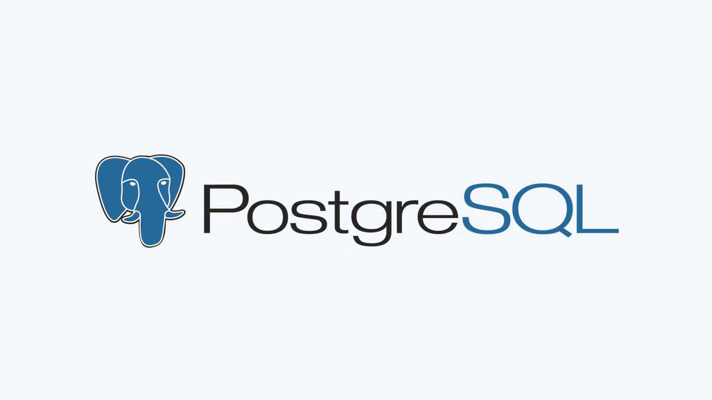

Реляционные базы данных используются уже очень давно. Они стали популярными благодаря успешным реализациям реляционных моделей в системах управления, оказавшимся весьма удобными для работы с данными. В этой статье мы сравним три самые популярные реляционные системы управления базами данных (РСУБД): SQLite, MySQL и PostgreSQL.
Реляционные системы управления базами данных
Реляционные системы реализуют реляционную модель работы с данными, которая определяет всю хранимую информацию как набор связанных записей и атрибутов в таблице.
СУБД такого типа используют структуры (таблицы) для хранения и работы с данными. Каждый столбец (атрибут) содержит свой тип информации. Каждая запись в базе данных, обладающая уникальным ключом, передаётся в строку таблицы, и её атрибуты отображаются в столбцах таблицы.
Популярные РСУБД
В этой статье мы расскажем о 3 наиболее популярных РСУБД:
- SQLite: очень мощная встраиваемая РСУБД.
- MySQL: самая популярная и часто используемая РСУБД.
- PostgreSQL: самая продвинутая и гибкая РСУБД.
SQLite
SQLite — это изумительная библиотека, встраиваемая в приложение, которое её использует. Будучи файловой БД, она предоставляет отличный набор инструментов для более простой (в сравнении с серверными БД) обработки любых видов данных.
Когда приложение использует SQLite, их связь производится с помощью функциональных и прямых вызовов файлов, содержащих данные (например, баз данных SQLite), а не какого-то интерфейса, что повышает скорость и производительность операций.

Поддерживаемые типы данных
- NULL: NULL-значение.
- INTEGER: целое со знаком, хранящееся в 1, 2, 3, 4, 6, или 8 байтах.
- REAL: число с плавающей запятой, хранящееся в 8-байтовом формате IEEE.
- TEXT: текстовая строка с кодировкойUTF-8, UTF-16BE или UTF-16LE.
- BLOB: тип данных, хранящийся точно в таком же виде, в каком и был получен.
Для получения более подробной информации ознакомьтесь с документацией.
Преимущества
- Высокая скорость. Благодаря особенностям архитектуры SQLite работает быстро, особенно на чтение. Компоненты СУБД встроены в приложение и вызываются в том же процессе. Поэтому доступ к ним быстрее, чем при взаимодействии между разными процессами.
- Хранение данных в одном файле. База данных состоит из табличных записей, связей между ними, индексов и других компонентов. В SQLite они хранятся в едином файле (database file), который находится на том же устройстве, что и программа. Чтобы при работе не возникало ошибок, файл блокируется для сторонних процессов перед записью. Раньше это приводило к тому, что записывать данные в базу мог только один процесс единовременно. Но в новых версиях это решается перенастройкой режима работы СУБД.
- Минимализм. Создатели SQLite пользуются принципом «минимального полного набора». Из всех возможностей SQL в ней есть наиболее нужные. Поэтому SQLite отличают малый размер, простота решений и легкость администрирования. Для повышения базовой функциональности можно использовать стороннее программное обеспечение и расширения.
- Малый размер. Полностью сконфигурированный SQLite со всеми настройками занимает меньше 400 Кб. Если использовать СУБД без дополнительных компонентов, размер можно уменьшить до 250 Кб. Он зависит только от количества загруженной информации. Несмотря на малый размер, SQLite поддерживает большинство функций стандарта SQL2 и имеет ряд собственных.
- Доступность. SQLite находится в публичном доступе. На ее использование нет правовых ограничений, а владельцем считается общество. Можно открывать, просматривать и изменять исходный код установленного ПО.
Недостатки
- Ограничения в применении. Отсутствие сервера — преимущество и недостаток одновременно. Без сервера возможности СУБД меньше. Например, к одной базе не смогут обращаться несколько разных устройств.
- Отсутствие встроенной поддержки Unicode. Unicode — это популярный стандарт кодирования символов. Он включает практически все существующие знаки и буквы, поэтому считается самым распространенным в мире. Без его поддержки приложение не сможет корректно работать с кириллицей, иероглифами и многими другими символами. SQLite «из коробки» не поддерживает Unicode, его нужно настраивать отдельно. Это может вызвать сложности с локализацией.
- Отсутствие пользовательского управления. Продвинутые БД предоставляют пользователям возможность управлять связями в таблицах в соответствии с привилегиями, но у SQLite такой функции нет.
Когда не стоит использовать
1) Многопользовательские приложения: если вы работаете над приложением, доступом к БД в котором будут одновременно пользоваться несколько человек, лучше выбрать полнофункциональную РСУБД — например, MySQL.
2) Приложения, записывающие большие объёмы данных: одним из ограничений SQLite являются операции записи. Эта РСУБД допускает единовременное исполнение лишь одной операции записи.
MySQL
MySQL — это самая популярная из всех крупных серверных БД. Разобраться в ней очень просто, да и в сети о ней можно найти большое количество информации. Хотя MySQL и не пытается полностью реализовать SQL-стандарты, она предлагает широкий функционал. Приложения общаются с базой данных через процесс-демон.
Поддерживаемые типы данных
- TINYINT: очень маленькое целое.
- SMALLINT: маленькое целое.
- MEDIUMINT: целое среднего размера.
- INT или INTEGER: целое нормального размера.
- BIGINT: большое целое.
- FLOAT: знаковое число с плавающей запятой одинарной точности.
- DOUBLE, DOUBLE PRECISION, REAL: знаковое число с плавающей запятой двойной точности.
- DECIMAL, NUMERIC: знаковое число с плавающей запятой.
- DATE: дата.
- DATETIME: комбинация даты и времени.
- TIMESTAMP: отметка времени.
- TIME: время.
- YEAR: год в формате YY или YYYY.
- CHAR: строка фиксированного размера, дополняемая справа пробелами до максимальной длины.
- VARCHAR: строка переменной длины.
- TINYBLOB, TINYTEXT: BLOB- или TEXT-столбец длиной максимум 255 (2^8 – 1) символов.
- BLOB, TEXT: BLOB- или TEXT-столбец длиной максимум 65535 (2^16 – 1) символов.
- MEDIUMBLOB, MEDIUMTEXT: BLOB- или TEXT-столбец длиной максимум 16777215 (2^24 – 1) символов.
- LONGBLOB, LONGTEXT: BLOB- или TEXT-столбец длиной максимум 4294967295 (2^32 – 1) символов.
- ENUM: перечисление.
- SET: множества.
Преимущества
- Производительность: MySQL обладает хорошей производительностью и быстродействием благодаря оптимизированным алгоритмам выполнения запросов. Умеет работать с большими объемами данных с минимальными задержками.
- Безопасность: MySQL имеет в своем функционале различные функции безопасности, включая возможность установки привилегий пользователя, шифрование данных, аутентификацию и аудит, чтобы обезопасить информацию, хранящуюся в базах данных.
- Мощность и масштабируемость: MySQL может работать с действительно большими объёмами данных, и неплохо походит для масштабируемых приложений.
- Простота: MySQL легко устанавливается. Существует много сторонних инструментов, включая визуальные, облегчающих начало работы с БД.
- Гибкость: в MySQL реализованы различные типы данных, индексы, хранимые процедуры, триггеры и другие функции, обеспечивающие гибкость при обработке данных. Это дает возможность создания сложных схем данных. MySQL совместима с довольно большим количеством операционных системам.
СУБД MySQL предлагает множество преимуществ, делающих ее популярной и широко используемым выбором для работы с базами данных.
Недостатки
- Ограничения на производительность: MySQL может иметь проблемы с производительностью при обработке больших объемов данных или когда требуется обработка сложных запросов или подключение большого количества клиентов. Это может привести к замедлению работы или даже отказу в обслуживании.
- Ограниченный набор типов данных: MySQL имеет ограниченный набор типов данных по сравнению с некоторыми другими СУБД. Например, поддержка временных данных и географических данных ограничена по сравнению с некоторыми другими СУБД.
- MySQL не соответствует стандарту SQL: СУБД не поддерживает некоторые функции и имеет расширения, не относящиеся к стандартному SQL. Для большинства проектов это не станет серьезной проблемой, но при миграции на другие СУБД этот момент может всплыть.
- Сложность администрирования: MySQL может быть сложным для администрирования, особенно для новичков. Настройка и оптимизация параметров конфигурации может быть сложной задачей, требующей глубоких знаний и опыта.
Когда не стоит использовать
SQL-совместимость: поскольку MySQL не пытается полностью реализовать стандарты SQL, она не является полностью совместимой с SQL. Из-за этого могут возникнуть проблемы при интеграции с другими РСУБД.
Конкурентность: хотя MySQL неплохо справляется с операциями чтения, одновременные операции чтения-записи могут вызвать проблемы.
Недостаток функций: в зависимости от выбора движка MySQL может недоставать некоторых функций.
PostgreSQL
PostgreSQL — это самая продвинутая РСУБД, ориентирующаяся в первую очередь на полное соответствие стандартам и расширяемость. PostgreSQL, или Postgres, пытается полностью соответствовать SQL-стандартам ANSI/ISO.
PostgreSQL отличается от других РСУБД тем, что обладает объектно-ориентированным функционалом, в том числе полной поддержкой концепта ACID (Atomicity, Consistency, Isolation, Durability).
Будучи основанным на мощной технологии Postgres отлично справляется с одновременной обработкой нескольких заданий. Поддержка конкурентности реализована с использованием MVCC (Multiversion Concurrency Control), что также обеспечивает совместимость с ACID.
Поддерживаемые типы данных
- bigint: знаковое 8-байтное целое.
- bigserial: автоматически инкрементируемое 8-битное целое.
- bit [(n)]: битовая строка фиксированной длины.
- bit varying [(n)]: битовая строка переменной длины.
- boolean: булевская величина.
- box: прямоугольник на плоскости.
- bytea: бинарные данные.
- character varying [(n)]: строка символов фиксированной длины.
- character [(n)]: строка символов переменной длины.
- cidr: сетевой адрес IPv4 или IPv6.
- circle: круг на плоскости.
- date: календарная дата.
- double precision: число с плавающей запятой двойной точности.
- inet: адрес хоста IPv4 или IPv6.
- integer: знаковое 4-байтное целое.
- interval [fields] [(p)]: временной промежуток.
- line: бесконечная прямая на плоскости.
- lseg: отрезок на плоскости.
- macaddr: MAC-адрес.
- money: денежная величина.
- path: геометрический путь на плоскости.
- point: геометрическая точка на плоскости.
- polygon: многоугольник на плоскости.
- real: число с плавающей запятой одинарной точности.
- smallint: знаковое 2-байтное целое.
- serial: автоматически инкрементируемое 4-битное целое.
- text: строка символов переменной длины.
- time [(p)] [without time zone]: время суток (без часового пояса).
- time [(p)] with time zone: время суток (с часовым поясом).
- timestamp [(p)] [without time zone]: дата и время (без часового пояса).
- timestamp [(p)] with time zone: дата и время (с часовым поясом).
- tsquery: запрос текстового поиска.
- tsvector: документ текстового поиска.
- txid_snapshot: снэпшот ID пользовательской транзакции.
- uuid: уникальный идентификатор.
- xml: XML-данные.
Преимущества
- Сообщество: PostgreSQL поддерживается опытным сообществом
- Поддержка множества типов данных. Еще одна особенность PostgreSQL — поддержка большого количества типов записи информации. Это не только стандартные целочисленные значения, числа с плавающей точкой, строки и булевы значения («да/нет»), но и денежный, геометрический, перечисляемый, бинарный и другие типы. PostgreSQL «из коробки» поддерживает битовые строки и сетевые адреса, массивы данных, в том числе многомерные, композитные типы и другие сложные структуры. В ней есть поддержка XML, JSON и NoSQL-баз.
- Работа с большими объемами. В большинстве СУБД, рассчитанных на средние и небольшие проекты, есть ограничения по объему базы и количеству записей в ней. В PostgreSQL ограничений нет.
- Поддержка сложных запросов. PostgreSQL работает со сложными, составными запросами. Система справляется с задачами разбора и выполнения трудоемких операций, которые подразумевают и чтение, и запись, и валидацию одновременно. Она медленнее аналогов, если речь заходит только о чтении, но в других аспектах превосходит конкурентов.
- Объектно-ориентированность: PostgreSQL — не только реляционная, но и объектно-ориентированная СУБД.
- Поддержка сторонними организациями: несмотря на очень продвинутые функции, PostgreSQL используется в многих инструментах, связанных с РСУБД.
- Расширяемость: PostgreSQL можно программно расширить за счёт хранимых процедур.
- Соответствие ACID. ACID — это набор принципов для обеспечения целостности данных. Аббревиатура расшифровывается как Atomicity, Consistency, Isolation, Durability — атомарность, согласованность, изолированность, прочность.
- Открытость. PostgreSQL — ПО с открытым исходным кодом, которое распространяется по свободной лицензии. Это означает, что любой разработчик может посмотреть, как написана система, или предложить для нее свои правки.
Недостатки
- Сложности при настройке. У PostgreSQL очень обширный набор возможностей. Очевидно, что такое разнообразие функций влечёт за собой множество настроек, что может вызвать затруднения у новичков.
- Повышенное потребление ресурсов. В сравнении с некоторыми другими СУБД, PostgreSQL может потреблять больше ресурсов (включая оперативную память и процессорное время). Это особенно заметно при работе с большими объёмами данных и выполнении сложных запросов.
- Отсутствие некоторых функций. По сравнению с определенными коммерческими аналогами PostgreSQL может немного уступать в функциональности.
- Производительность: В простых операциях чтения PostgreSQL может уступать своим соперникам.
Когда не стоит использовать PostgreSQL
- Скорость: если всё, что нужно — это быстрые операции чтения, не стоит использовать PostgreSQL.
- Простые ситуации: если вам не требуется повышенная надёжность, поддержка ACID и всё такое, использование PostgreSQL — это стрельба из пушки по мухам.
Заключение
Подводя итог, стоит отметить, что выбор между SQLite, MySQL и PostgreSQL должен определяться требованиями приложения. Небольшое приложение с отсутствием необходимости высокой производительности и масштабируемости делает привлекательным SQLite. А большой объем данных и высокая нагрузка – MySQL или PostgreSQL. Однако, в процессе подбора СУБД необходимо учитывать не только требования приложения, но и доступные ресурсы и опыт в управлении базами данных.